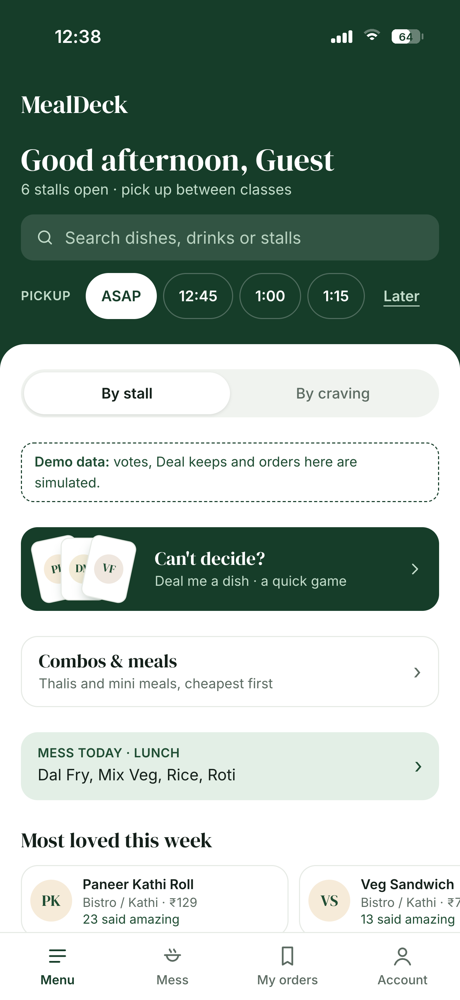
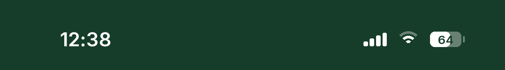
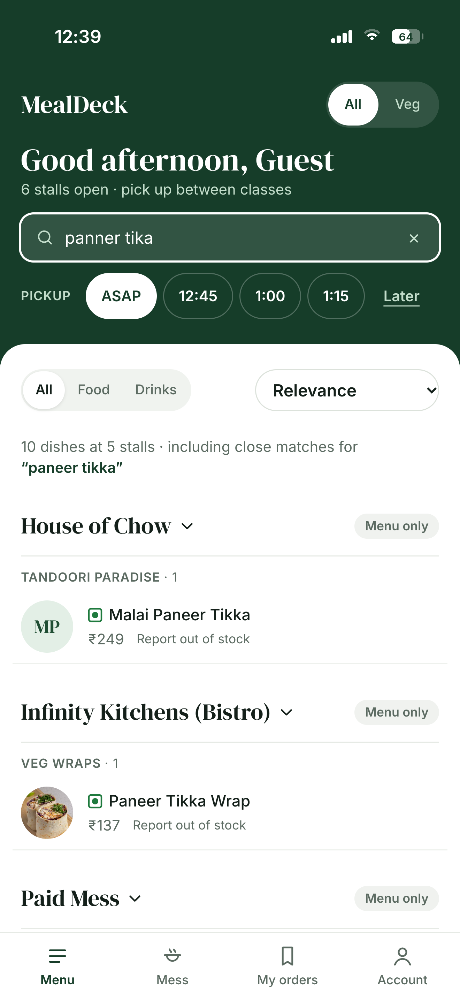
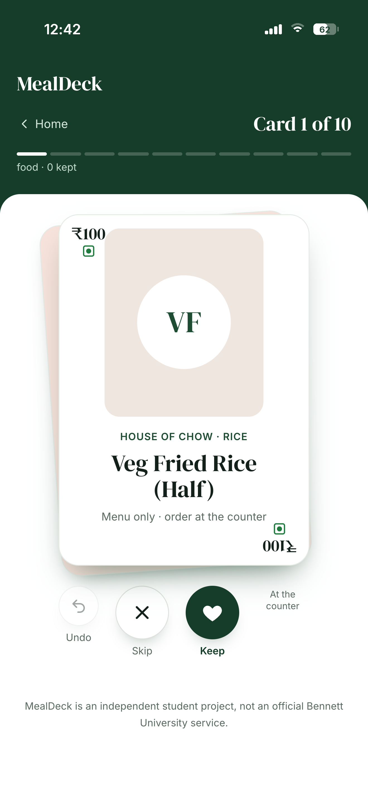
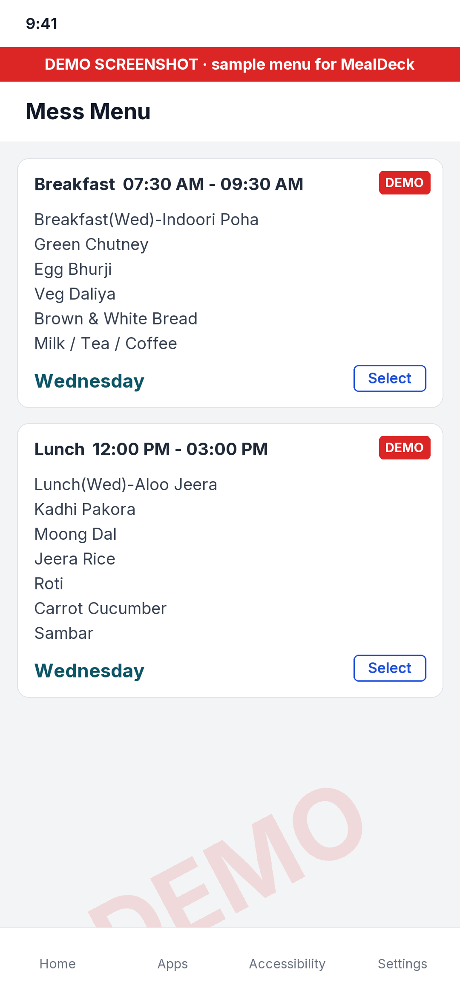
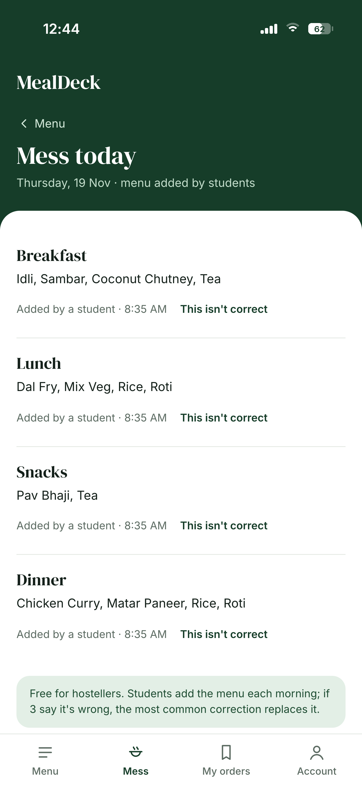
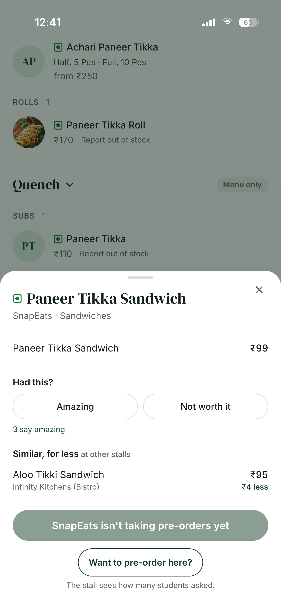

Every campus stall's menu in one place.
Prices, what's sold out right now and what other students thought. Check on your phone before you walk over.

We timed it at a campus counter. MealDeck starts with menus; pre-ordering is built and waiting for stalls to opt in.
Here's what it looks like.
Searching with a typo, opening a dish, a few swipes in Deal me a dish, then filling today's mess menu from two screenshots.
Recorded on the demo, at normal speed. Try the same thing at demo.mealdeck.in.

Typos are fine.
"panner tika" still finds Paneer Tikka. Tested on 39 misspelled searches:

Swipe when you can't decide.
Keep or skip ten dishes. The next hand leans towards what you kept.
Online logistic regression: a model shared by everyone plus a personal one, updated after every hand. One switch in Account turns it off and deletes your swipes.

Fill it in from a screenshot.
Pick your MyCamu screenshots and all four meals fill in for everyone.
Tesseract OCR runs in the phone's browser, so the screenshot is never uploaded. You check every dish before it's saved.


Open any dish.
You see cheaper look-alikes at other stalls (Similar, for less), the time it usually sells out, and how many students said Amazing or Not worth it.
29% of dishes have a cheaper look-alike on campus. Oreo shake: ₹147 → ₹85.

Predicting when it's ready.
Simulated data No stall takes pre-orders yet, so it's trained on 1,600 simulated orders and tested on 400 more. It leans most on how many orders are ahead in the queue.
Scan it. Search something with a typo.
Android user? Leave your Gmail at the table to test the app before it's on the Play Store.